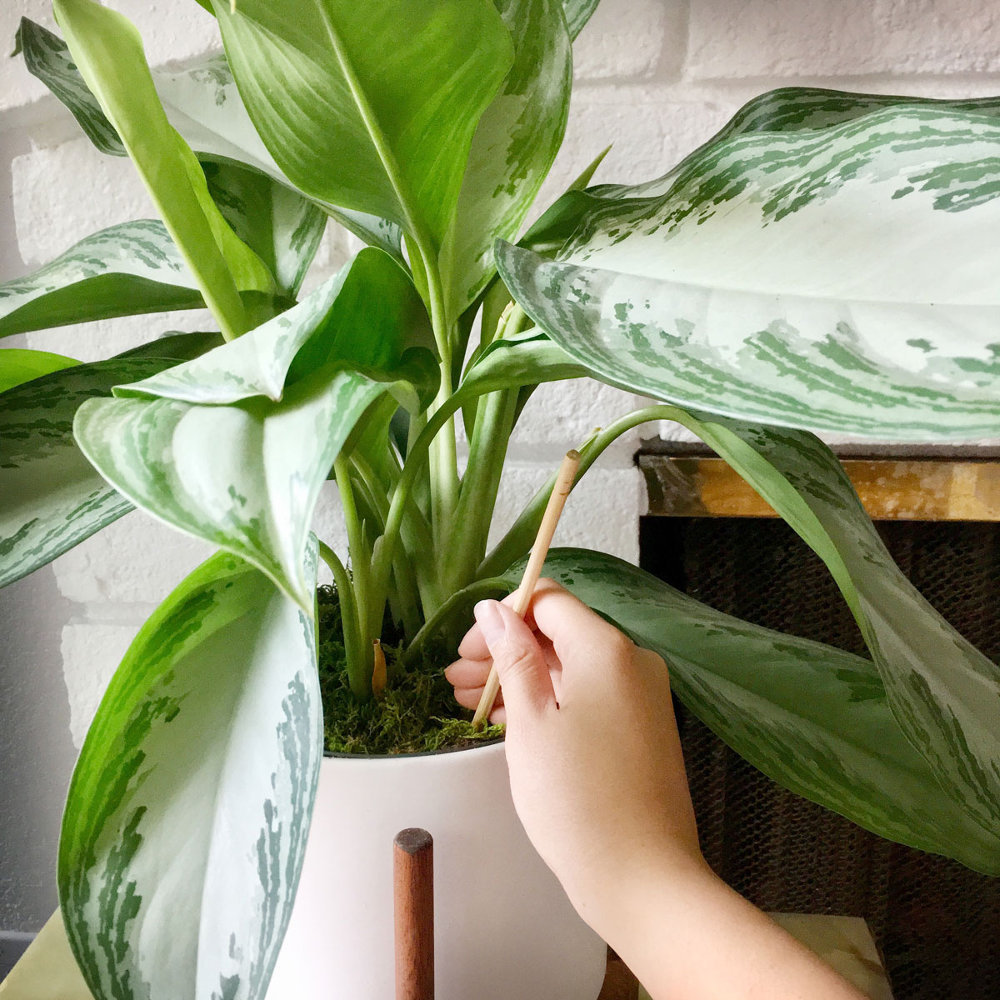

There are so many reasons to love houseplants. From purportedly removing pollutants and reducing stress to increasing focus and creativity, they bring some of the outdoors inside and are, almost literally, a breath of fresh air. But given that they were designed to live outside in the ground and in accordance with Mother Nature, if we decide to foster them inside, we have to take care to treat them well. And one of the ways in which we mess up the most is with watering. Dr. Leonard Perry, a professor emeritus of horticulture at the University of Vermont, notes that watering, and most often overwatering, is where most houseplant-keepers go wrong. Fortunately, he writes, “it really isn’t that difficult or rocket science once you consider environmental factors, and the individual plant needs.” And that’s a key point: Each plant has a different watering need. And not just from species to species, but also depending on a plant’s pot and potting medium, its location in the home, the weather, the season, et cetera. But once you know how to read a plant and its soil, which isn’t that hard, you can master the art of watering. Here’s what to know.
Why It’s Not One Size Fits All
Some plants are guzzlers, others don’t need water for weeks, many are somewhere in-between – so it’s good to do a little research and see generally where each specific species falls on the water spectrum. Further variables include:
- Potting medium (can add to moisture or dryness)
- Light exposure
- Temperature
- Humidity
- Dormant phase versus growth phase (many plants grow more during spring and summer, and want more water then)
- Hanging versus sitting (hanging plants dry out more quickly)
How to Tell When a Plant Needs Watering
With most plants, you should water when the soil feels dry to the touch. You can gently stick your finger (up to the knuckle or so) in the soil to see how dry it is. For water lovers, water when the surface is dry; for succulents and drier plants, water when most of the soil feels dry.
Also, you can lift a potted plant (or carefully tilt or nudge the pot if it’s a big one) to gauge how wet the soil is. If you get a sense for its weight right after you water, you will have a base weight to compare it to as it dries out.
If the soil is dry and the leaves are wilting, the plant is likely thirsty. But wilting (and dropping and/or yellowing) leaves can also mean too much water.
When to Water
Most simply put, water according to a houseplant's needs and growth patterns. Easy, right? Ha. Most plants (but not all, because plants are wily things) will want more water in spring and summer, and less during their dormant period in fall and winter – you can tell their growth and dormant phases by when they are growing the most. Because the variables that affect a plant’s thirst are ever changing, it’s best not to stick to a fixed schedule. As Dr. Perry notes, “watering on a fixed schedule may mean plants are overwatered at one time of the year but under-watered at other times.” However he does recommend a fixed schedule to check them for water. Since soggy leaves can invite disease and fungus,1 the best time to water is in the morning, giving the plant the daytime to dry out. For plants by windows that are accustomed to a lot of light, be careful of overwatering on cloudy days since their foliage will not dry out at the usual rate. (All of that said, some tropical plants love humidity and want to be misted; more on that in an upcoming post.)
What Kind of Water to Use
Tepid. Just like you probably don’t like an ice-cold shower, your plants don’t either. Frigid water straight from the faucet can shock the roots, especially for tropical plants who spend their time dreaming of the sultry rainforest (not really, but maybe...?). You can fill the watering can when you’re done watering; when the time comes to water again, the water is perfectly room temperature – and if it’s tap water, it has a chance to dechlorinate. Rainwater is probably a plant’s favorite, if you don’t live in a place with too much pollution, that is. Well water is usually good too, if it’s not too alkaline for acid-loving houseplants.2 Tap water can be great, but the salt in softened water can become problematic – and some plants don’t like chlorinated water.3 Finding the right water can take some trial and error.
Choose the Right Watering Can
A watering can with a long spout gives the best control for directing water all around the soil, while avoiding wetting the leaves – again, for many plants, wet leaves invite fungus.
How to Water From the Bottom
Bottom watering – in which a plant absorbs water from the bottom instead of the top – is a great way to give your plants a sufficient drink without drenching their foliage. It ensures that those important roots near the bottom are getting enough to drink, which is harder when watering from the top. You can add water to the pot’s saucer and let it sit, adding more water if necessary, until the soil is wet underneath the surface – then drain the water. You can also use a container that is large enough to hold the planter, and fill it halfway or so with water. If the soil feels moist under the surface after 10 minutes, remove it. If still dry, give it another 10 minutes, or long enough to get moisture to the top. Regardless of how long you let it soak, do not forget about it and let it soak all day. The only problem with bottom-watered plants is that it doesn’t remove excess salts from the soil like top watering does. Easy solution: Top water your bottom-watered plants once a month or so.
Remember to Aerate Your Soil
Since a houseplant doesn’t have the benefit of worms and other creatures to aerate the soil, its humans need to poke some holes in the soil from time to time – allowing the water get to where it needs to go. This helps “break up dry pockets of soil, ensure even moisture distribution, and get airflow to the roots,” says Darryl Cheng of the popular Instagram feed, houseplantjournal, and keeps “the soil structure healthy until the next time you repot the plant."
How Much Water to Use
Some plants naturally may want less water, like cacti, succulents, and plants with thick leaves. Most of the rest like to drink. And remember, they usually want drinks, not bitty little sips. Add enough water so that water comes out of the drain hole – you want all the roots to get wet, and enough water to flush out salts. If the potting medium is really dry, it has a harder time absorbing the water – so if water runs out the bottom surprisingly quickly, it is probably passing right through. In this case, give the plant a long, slow drink to allow the soil to absorb it. For really dry plants, you may notice that the soil has dried up enough to create a gap between the edge and the pot – in this case, gently nudge the soil back into place so that the water doesn’t have an escape route straight down the side.
What to Do After You Water
Many plants root systems have a bit of a Goldilocks syndrome – they want not too little, not too much, but just the right amount. It’s not that exact, but one thing is certain: Most do not appreciate being forced to sit in their water for too long. Not only do they begin to soak the salt back up, but staying too wet can lead to rotting roots. For a pot that sits inside of a decorative pot without a drain hole, make sure that the outer pot is not filled with water after watering. (I learned that one the hard way ... sorry, my beautiful string of pearls! At least I figured it out before it was RIP time, but still, it wasn’t pretty.) So check after 30 minutes and dump out any water from the outer pot. If your pot sits on a saucer, also check back after 30 minutes and dump any lingering water out of the saucer. This give the plant enough time to get a little extra watering from the bottom, but not enough to lead to over-wetness problems.
Getting to Know Your Plants
The trick really is just getting to know a plant. It’s the reason that I add plants one by one, despite my plant lust at the nursery. But when all else fails, fight the urge to nurture with abundance. As Dr. Perry writes, “The best advice is that if in doubt about whether to water or not, don’t. It is better for plants to be a bit dry, than too wet.”